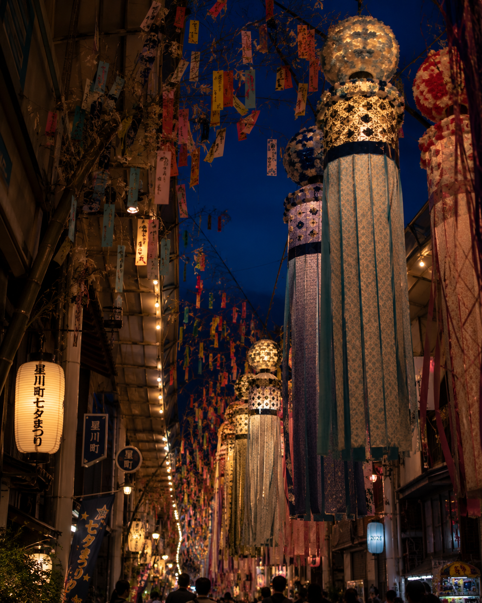
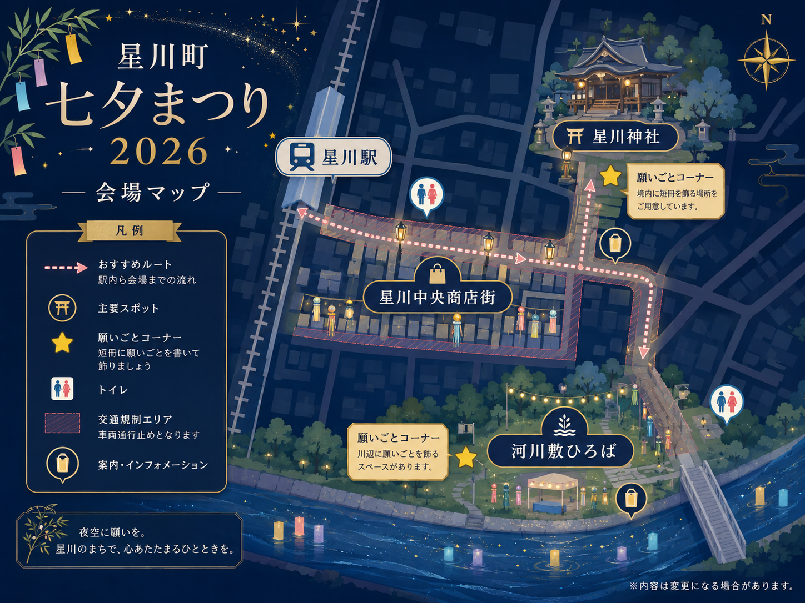

織姫と彦星が出会う夜に、
あなたの願いも、空へ。
天の川をはさんで一年に一度だけ会えるふたつの星——織姫と彦星。その夜に、人々は色とりどりの短冊へ願いを託してきました。星川の七夕まつりは、商店街いっぱいに揺れる七夕飾り、笹の葉のさざめき、露店のにぎわい、そして夜空を見上げる時間。願いを書いて、笹に結んで、ゆっくり歩く。それだけで、少しだけ空が近くなる三日間です。
商店街のアーケードを埋めつくす、吹き流しと短冊。地元の学校や商店が丹精込めた大飾りが、風にゆれて鳴る。見上げて歩くだけで、心が躍る通りです。
飾りコンクール
焼きそば、かき氷、りんご飴。夕暮れとともに灯りがともり、通りは祭りの匂いでいっぱいに。片手に何かを持って、そぞろ歩きを楽しんで。
露店マップ三日目の夜、河川敷から打ち上がる約2,000発の花火。天の川に見立てた大玉が夜空を横切るとき、街じゅうの願いが一斉に空へのぼっていく。
花火観覧のご案内会場の願いごとコーナーでは、短冊に願いを書いて笹に結べます。書いていただいた願いは、最終夜の「昇天神事」でお焚き上げし、空へお届けします。

〒000-0000 ◯◯県星川市中央1丁目 一帯（架空の地名です）
会期中は会場周辺で交通規制を行います。お車でのご来場はご遠慮ください。夜間・混雑時はお子さまから目を離さないようご注意ください。荒天時は花火の順延・中止があります。最新情報は公式SNSでご確認ください。